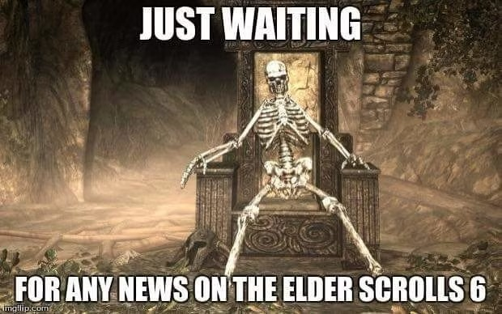

Seguimos esperando... pero al menos ya respira
Durante años los fans de The Elder Scrolls hemos aprendido una habilidad que no aparece en ningún árbol de habilidades: esperar.
El teaser de The Elder Scrolls VI apareció en 2018 y durante muchísimo tiempo Bethesda apenas mostró información concreta. Pero en 2026 llegó una señal bastante más interesante: Bethesda confirmó que TES VI es actualmente su principal foco de desarrollo y que la mayoría del equipo está trabajando en él.
¿Tenemos fecha de lanzamiento? No. ¿Tenemos gameplay público? Tampoco. ¿Seguimos mirando el horizonte como ese esqueleto? Absolutamente.